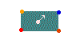
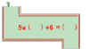
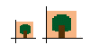
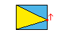
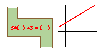
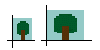
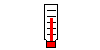
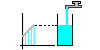

Miscellaneous

Billiareds
(for Explorer 3.0 only)
Solid of Solomon

Linear Function
(for Explorer 4.0 only)
Staires
(for Explorer 4.0 only)


Similar Figures and Ratio
(for Explorer 4.0 only)
Figure and Area
(for Explorer 4.0 only)


Linear Functions & Graphs
(for Explorer 4.0 only)
Figures and Ratio of Area


Thermometer
(for Explorer 4.0 only)
Linear Function and Graph
Information of Products